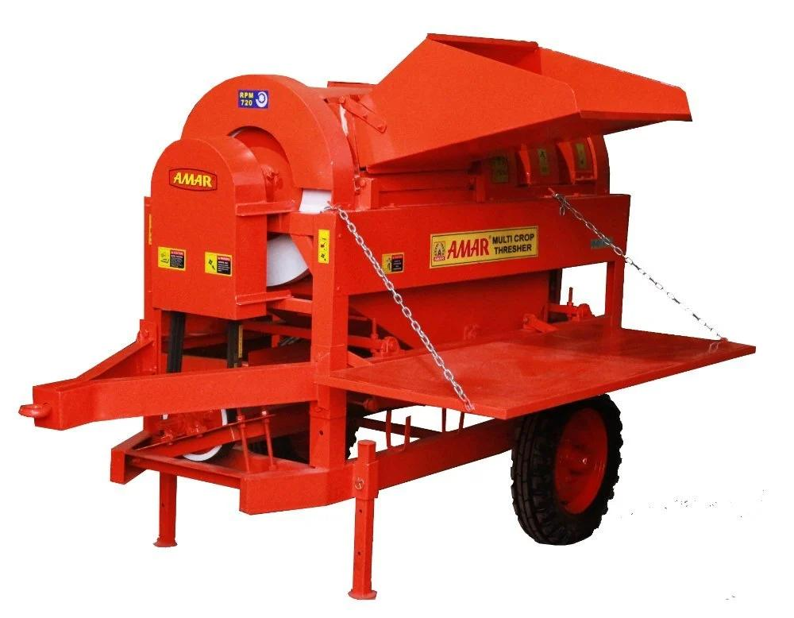

For All Major Crops
Multi-Crop Thresher
One machine for the whole season — threshes wheat, paddy, maize, soybean, mustard, gram and more by changing sieves and settings.
- Typical tractor size35 HP & above
- DriveTractor PTO
- CropsAll major crops
- Best forMixed-crop farms, custom hiring